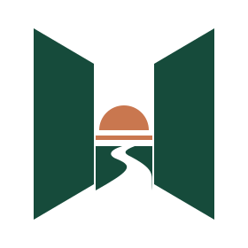

I'm thrilled to share that my EB2 NIW was approved — and I owe a great deal of that success to Rahat. My original petition received an RFE because my law firm didn't provide much support. Rahat stepped in and made a real difference; the RFE reply he crafted was outstanding.
EB-2 NIW · EB-1 · RFE & NOID
EB-2 NIW and EB-1 petitions, prepared with precision.
Full petition packages for self-petitioners, professionals, researchers and professors — plus RFE and NOID responses, even for petitions we did not prepare.
- Original drafting
- Verifiable reviews
- Not a law firm — we prepare, you file
4.8 / 5
from 44 reviews on Fiverr · checked 16 Nov 2026 · view source ↗
- Every review links to its source
- Full packages or single deliverables
- Clients across multiple countries
What we prepare
Immigrant petitions and USCIS responses
Our core work is employment-based green card petitions and the RFE or NOID responses that follow them.
EB-2 NIW
Immigrant petitionNational Interest Waiver
Self-petition without a job offer. We define the endeavor, map the Dhanasar prongs and draft the full package.
What's includedEB-1A
Immigrant petitionExtraordinary Ability
Criteria-by-criteria evidence mapping, petition narrative and exhibit organization for sustained acclaim.
What's includedEB-1B
Immigrant petitionOutstanding Professor or Researcher
Employer-sponsored academic petitions: recognition evidence, letters and a petition that holds together.
What's includedEB-1C
Immigrant petitionMultinational Manager or Executive
Corporate relationship documentation, role descriptions and supporting evidence for transferring executives.
What's includedRFE Response
Response serviceRequest for Evidence support
A point-by-point response to what the officer actually questioned — including petitions we did not prepare.
What's includedNOID Response
Response serviceNotice of Intent to Deny support
A focused rebuttal of the stated grounds, with new evidence organized so the argument is easy to follow.
What's included
What you receive
A full petition package — or just the piece you need.
Every deliverable below is prepared for your record, from scratch. Engage the whole package, or a single document for a case you or your attorney are already preparing.
- Petition narrative and cover letter
- The argument an adjudicator reads first, written around your evidence.
- Proposed endeavor or criteria mapping
- Dhanasar prongs for NIW; regulatory criteria for EB-1A, EB-1B and EB-1C.
- Recommendation letters
- Drafted from scratch for each recommender, consistent with the petition.
- Expert opinion letters
- Independent field-expert assessments of your work and its significance.
- Evidence and exhibit organization
- Indexed exhibits in filing order, so every claim points to its document.
- Forms preparation checklist
- USCIS forms prepared and checked for consistency with the petition. You file.
- RFE and NOID drafting support
- If USCIS asks for more, we prepare the focused response.
01
02
03
04
05
06
07
Who we help
Built for people preparing their own case — and the professionals supporting them.
Self-petitioners
Filing EB-2 NIW or EB-1A without an employer, with or without your own attorney.
For self-petitionersProfessionals
Engineers, clinicians, founders and specialists with a record that needs to be argued, not just listed.
For professionalsResearchers & scientists
Publications, citations and funding translated into a national-importance argument.
For researchersProfessors & academics
EB-1B with your institution, or EB-2 NIW on your own record of teaching and research.
For professorsStudent or investor? See other US visas we prepare →
Understanding EB-2 NIW
What the National Interest Waiver actually asks of you
The EB-2 NIW lets a qualified applicant ask USCIS to waive the job offer and labor certification requirements. First you must meet the EB-2 baseline — an advanced degree or exceptional ability. Then USCIS applies the three-part framework from Matter of Dhanasar (AAO 2016).
The petition is won or lost on how precisely the endeavor is defined and how directly the evidence supports each prong. That is the work we do before anything is drafted.
1
Substantial merit and national importance
Two tests in one prong. Merit is broad; national importance turns on the prospective impact of the specific endeavor you describe.
2
Well positioned to advance the endeavor
Education, skills, record of success, plans, progress and the interest of others in your work.
3
On balance, waiving the job offer benefits the United States
Why it would be impractical to require labor certification, or why the national benefit outweighs it.
Source: Matter of Dhanasar, 26 I&N Dec. 884 (AAO 2016); INA §203(b)(2)(B); 8 CFR 204.5(k). Educational summary, not advice about any individual case.

PhotoSlot — approved photograph to be supplied by the owner. No stock imagery.
Who prepares your case
Rahat Karim, Founder & Immigration Case Consultant
Rahat founded Immigration Horizons after 5+ years preparing EB-1A, EB-1B, EB-1C and EB-2 NIW self-petitions for clients worldwide, both directly for individuals and as additional support for immigration attorneys and paralegals.
- 200+ cases: petition letters, recommendation and expert opinion letters, business plans and RFE responses
- One dedicated point of contact from first consultation to final package
- [Further professional background to be added only in owner-approved wording]
How we work
Eight steps from first conversation to a filing-ready package
We prepare. You, or your attorney, file. Each step describes what happens, never how long it takes — timing is checked against the official USCIS processing-times tool at consultation.
Consultation
You tell us about your background, your field and your goals. Free, and for assessment — not a sales pitch.
Eligibility review
We assess your record against each category you might qualify under and say honestly which ones it supports.
Case strategy
Evidence mapped to the criteria an adjudicator will apply; we decide which to lead on and where to reinforce.
Evidence collection
A specific list of what to gather, what each item must show and why it matters to your argument.
Drafting
Petition letters, personal statements, recommendation and expert letters, business or endeavor plans — from scratch.
Review
Every document checked for internal consistency so the whole filing tells one story.
Exhibit packaging
Evidence organized and indexed into a clean exhibit set an adjudicator can follow.
Submission preparation
Forms prepared and the package assembled so what you submit is complete. If an RFE or NOID follows, we prepare the response.
Why Immigration Horizons
Specific, verifiable differences — not promises
Full packages or single deliverables
Engage the whole petition, or one letter, plan or exhibit set for a case already in progress.
Original drafting
Petition letters, recommendation letters and expert opinions written from scratch around your record — no boilerplate.
Evidence organization
Exhibits indexed in filing order so every claim in the narrative points to its document.
RFE and NOID responses
Focused, evidence-led responses to what the officer actually questioned.
Support for petitions prepared elsewhere
Many clients come to us with a filing from another preparer. We review it and work from there.
Verifiable client reviews
Reviews and completed-case history are public on our marketplace profiles. Every review on this site links to its source.
Client reviews
All reviews
In their words — verbatim, with the source linked
Rahat is polite and communicative, delivered in a timely manner, helped arrange and index huge amounts of exhibits for EB1A.
No problem, Rahat! The other attorney I sent the case to (after very minor edits) called it a "work of genius." Looking forward to working with you again soon.
Other US visas we prepare
Nonimmigrant visa document preparation and interview coaching
Temporary classifications. We prepare documents and coach for interviews; we do not file or represent.
What is the EB-2 National Interest Waiver (NIW)?
The EB-2 National Interest Waiver is an employment-based immigrant petition route that lets a qualified applicant ask USCIS to waive the standard job offer and labor certification (PERM) requirements. USCIS assesses these petitions under the framework set out in Matter of Dhanasar, which asks three things: whether the proposed endeavor has substantial merit and national importance, whether the applicant is well positioned to advance it, and whether, on balance, it benefits the United States to waive the job offer requirement.
What is the difference between EB-1A and EB-2 NIW?
EB-1A is for individuals with extraordinary ability who can show sustained national or international acclaim. EB-2 NIW has a lower acclaim threshold but requires you to show that your specific proposed endeavor is nationally important and that waiving the job offer requirement benefits the United States. They are different arguments, not different tiers of the same argument.
Can you help if I have already received an RFE or NOID?
Yes, and this is one of the most common ways clients come to us — including on petitions we did not originally prepare. We review the notice, identify precisely what the officer is questioning, and prepare a focused response addressing those specific points with supporting evidence.
Can I hire you for just one document instead of a full petition?
Yes. Every deliverable can be engaged on its own — a recommendation letter set, an expert opinion letter, a business or endeavor plan, an evidence and exhibit package, or an RFE response.
Are you an immigration law firm?
No. Immigration Horizons is an immigration consulting and paralegal services practice. We prepare petitions, draft documents, conduct research, organise evidence, and assist with USCIS forms and packaging. We are not attorneys, we do not provide legal advice, and we do not represent clients before USCIS or any court.
Can you guarantee my petition will be approved?
No, and you should be cautious of anyone who does. USCIS adjudicates every petition on its own record, and no preparer controls that outcome. What we control is the quality of the argument, the strength and organisation of the evidence, and the internal consistency of the filing.
Start with a conversation
Tell us about your record. We'll tell you honestly what it supports.
A free consultation to assess your background against EB-2 NIW, EB-1 or the response you need to prepare. No obligation, no sales pitch.